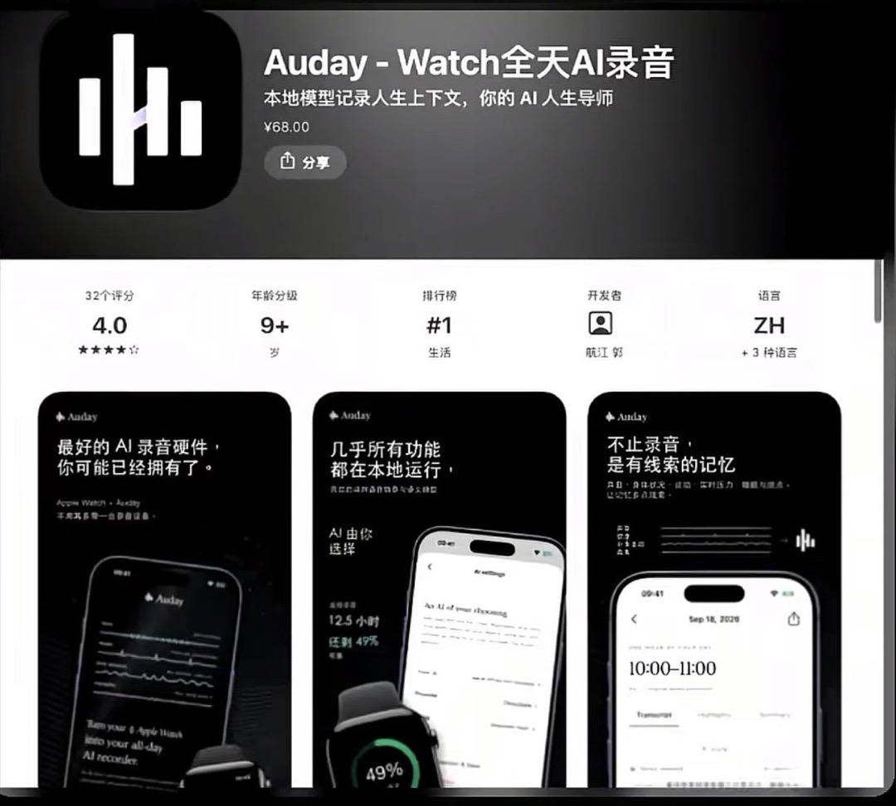
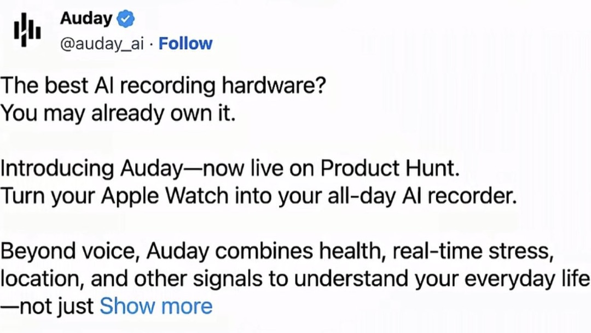
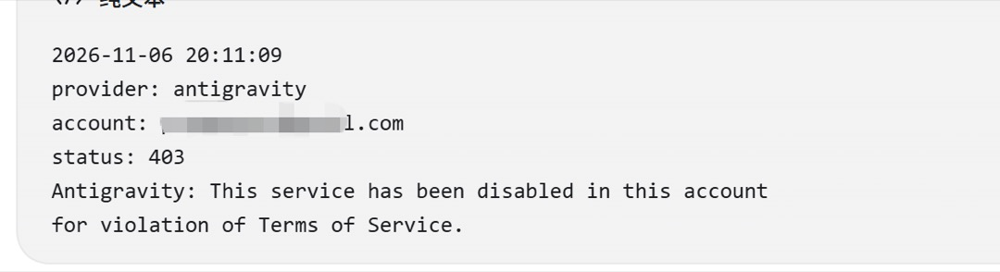
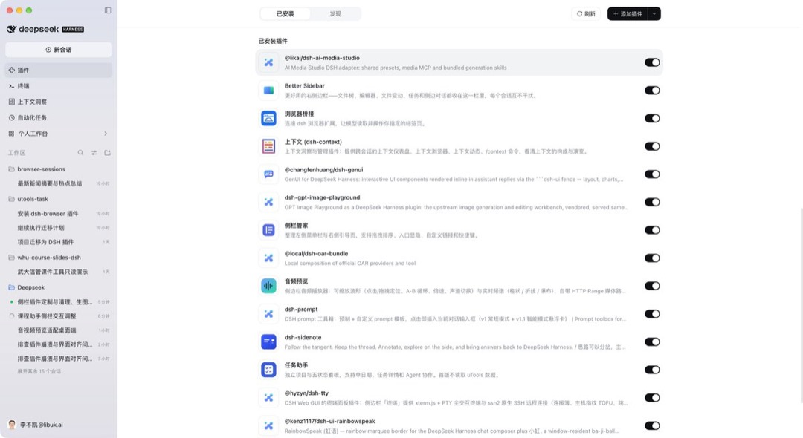

本期速览
01 LLM 账单取决于重跑率而非单价
03 个人助手与数字员工的Agent分工
04 Gemini Pro封禁第三方反代接口
06 Mobilio用普通手机为盲人领路
01｜LLM 账单取决于重跑率而非单价
来源（X） · @Rk1ngggg · 2026-11-07 18:24
有机构统计，过去半年实际支付的 token 价格差不多腰斩，B200 的租赁价反倒涨了近三成。卖出去的单价在往下走，撑住它的算力在往上走。真正决定账单的是三个数相乘：调用次数、单次输入输出量、重跑率。降价只动了其中一项，另外两项都归你管。
重跑是最容易漏算的那一项。同一个任务要跑几遍才过，这个倍数乘上去，比单价那点降幅狠多了。探索性的活反复试错，累计消耗经常比用贵一档的模型一次跑对还大。单价便宜不等于返工免费，重跑一次就是整段上下文再进一遍。
所以分工可以粗暴点：高频、可批量、验收标准能机读的活丢给 flash。R&K flow 里跑批量、做格式化这一段，Deepseek-flash-1017、minimax-3.1-flash、gemini-3.8-flash 这几个都够用。探索性的活反过来，先用 Claude 和 ChatGPT 高级模型把方案和验收标准定下来，输入收窄、假设固定，再交出去执行。需求还飘着就让便宜模型跑十遍，那不叫省钱。
判断标准就一条：别看单价，看每次运行跑通要花多少。把跑不通的次数乘进去，数字会变一个样。
02｜Auday把苹果手表变成本地录音机
来源（X） · @RachidSettas · 2026-11-06 20:02
这哥们叫BaiFu，之前做过两个冲上 GitHub 热榜的开源项目。
他发现市面上那些AI录音设备，要么太厚，要么得单独充电，买回来没几天就懒得带了。
后来睡醒看Apple Watch的睡眠数据，突然反应过来：
天天戴手上的苹果手表，不就是现成的AI录音设备吗？
苹果9月发布会刚结束，他花一周做出了Auday。
手表点一下，最长连续录音12.5小时。自动转文字，还能结合心率、位置还原当天的对话，甚至知道你什么时候突然心跳加速。
全程本地处理，不用搭服务器，国区68元买断。
上线当天，他只发了一条X帖子，花200美元推广，24小时破100万浏览，还冲上了多个国家的付费榜榜首。
别人还在研究怎么用AI赚钱，这哥们直接把大家手腕上吃灰的设备，变成了一台印钞机。


03｜个人助手与数字员工的Agent分工
来源（X） · @gaojingyu · 2026-11-07 16:10
Agent 集成软件：通过 MCP/API 调用 CRM、ERP 等系统，完成查询、分析和操作。
软件集成 Agent：比如在 Linear 中将 Issue 委派给 Coding Agent，由 Agent 执行任务并反馈结果。
我的判断是：
个人助手型工作，优先让 Agent 集成软件。
流程协作和数字员工型工作，优先让软件集成 Agent。
区别在于：Agent 是围绕个人目标调用软件，还是作为工作参与者进入企业业务流程。
04｜Gemini Pro封禁第三方反代接口
来源（X） · @Mashiro_0619 · 2026-11-06 23:20
从今天下午起，绑定 Jio 18 个月或低价区订阅的 Gemini Pro，只要挂着 magpie、sub2api 这些反重力工具当 API 跑的，大批遭遇定向拦截。
Google 账号本身没被送中，甚至网页端有时还能登录，但只要走第三方反代接口就会直接弹 ToS 违规封禁，连警告邮件都没有。

05｜DSH Desktop可浏览器调试插件
来源（X） · @libukai · 2026-11-07 19:19
现在我的做法就是有什么需求，就去 dsh-market 里面找个大致差不多的，然后开创造模式让 DSH 直接上手改，改完了自己去浏览器中开个 Web 版自己测试。
这套流程跑顺了之后，DeepSeek Harness 的插件玩起来比写纯文本的 Skill 有趣太多了，毕竟 UI 交互才是最适合人类参与的方式。
不过现在的插件推荐贴都实在是太水，要不然就过于偏程序员向，要不然就是好久没更新了。
看起来是时候，发挥自己的专长，来好好整一个适合非编程人员的 awesome-dsh-plugins 了。
另外，之后初级 FDE 我就准备直接讲 WorkBuddy，而 FDE 中级课程，会把实操工具变成 DeepSeek Harness 了。
什么 Codex/Claude/Grok，都不适合中国国情，就让高级 FDE 们去自娱自乐吧。

06｜Mobilio用普通手机为盲人领路
来源（X） · @aimusheng · 2026-11-07 18:49
只用一部普通手机，哈佛的手机App帮盲人走路比“拐杖加谷歌地图”快13%、室内碰撞少41%——哥哥失明，是博士生Raymond Liu做这件事的起点。
这款App叫Mobilio：普通手机摄像头加GPS和惯性传感器，用计算机视觉实时算出安全路径，再用随步态调整的提示音领路。
感觉这个项目在国内也可以试一下。